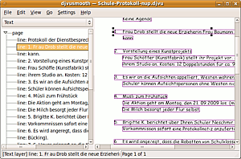
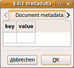

djvusmooth
Dieser Artikel wurde für die folgenden Ubuntu-Versionen getestet:
Ubuntu 16.04 Xenial Xerus
Ubuntu 14.04 Trusty Tahr
Zum Verständnis dieses Artikels sind folgende Seiten hilfreich:
djvusmooth  ist ein schlichtes Betrachter-Programm für DjVu-Dateien, mit dem aber auch Korrekturen an der eventuell vorhandener Texterkennung, Inhaltsverzeichnis, ("Outline") und den Metadaten möglich sind.
ist ein schlichtes Betrachter-Programm für DjVu-Dateien, mit dem aber auch Korrekturen an der eventuell vorhandener Texterkennung, Inhaltsverzeichnis, ("Outline") und den Metadaten möglich sind.
Installation¶
Installiert[1] werden muss das Paket
djvusmooth (universe)
 mit apturl
mit apturl
Paketliste zum Kopieren:
sudo apt-get install djvusmooth
sudo aptitude install djvusmooth
Nach Installation kann djvusmooth direkt gestartet werden [4] oder findet sich in GNOME unter
"Anwendungen -> Grafik -> djvusmooth"
In Nautilus wird außerdem ein Start-Eintrag im Kontextmenü angezeigt, wenn man eine .djvu-Datei  rechtsklickt. Der Betrachter lässt sich auf der Kommandozeile[2] auch gleich mit der gewünschten .djvu-Datei aufrufen:
rechtsklickt. Der Betrachter lässt sich auf der Kommandozeile[2] auch gleich mit der gewünschten .djvu-Datei aufrufen:
djvusmooth <Dateiname>.djvu
Bedienung¶
 Der Betrachter teilt sich in der Standardeinstellung in zwei Hauptbereiche auf, links die Seitenleiste, rechts das Hauptfenster, in dem das Dokument dargestellt wird. Die Bedienung erfolgt über die Reiter, viele Funktionen können auch die Tastenkürzel erreicht werden.
Seitenleiste¶
In der Seitenleiste werden Informationen über zusätzlich enthaltene Daten in der DjVu-Datei angezeigt, über das Dropdown-Menü lassen sich eventuell vorhandener "Text", "Outline" (Inhaltsverzeichnis) und "Hyperlinks" darstellen. Für den verborgene Text werden dann im Hauptfenster, je nach Vorlage, Kästen ("bounding boxes") für Absätze ("para"), Zeilen ("line") und Wörter ("word") eingeblendet; ein entsprechendes Baumdiagramm lässt sich in der Seitenleiste aufklappen. Wenn Hyperlinks vorhanden sind, werden sie mit URI und Kommentar ("comment") aufgelistet.
| "View -> Image" | |
| Name | Ebene |
| "Colour" | Zeigt das gesamte Dokument |
| "Stencil" | Stellt nur die bitonale Schablone/Maske des Dokuments dar |
| "Forground" | Stellt nur die Vordergrundebene des Dokuments dar |
| "Background" | Stellt nur die Hintergrundebene des Dokuments dar |
| "None" | keine, gff. nach Auswahl "verborgene Daten" |
Ebenen¶
Im Hauptfenster können die verschiedenen Ebenen des DjVu-Formats dargestellt werden.
In den aufgerufenen DjVu-Dokumenten wird über die Optionen in "Go" oder die entsprechenden Tastenkürzeln navigiert, über "View -> Zoom" kann man die Darstellungsgröße anpassen.
Über den Reiter "View -> Non raster data" kann ausgewählt werden, welche "verborgenen" Daten angezeigt werden sollen; für die Textebene werden dann für die erkannten Wörter, Zeilen und Absätze in allen Ebenen die entsprechenden Rahmen angezeigt.
Editieren von Daten¶
Text¶
Der Screenshot oben zeigt die Bearbeitungsmöglichkeit der Textebene, dazu muss im Dropdown-Menü der Seitenleiste "Text" gewählt und dann der Pfeil in der Seitenleiste neben "page" angeklickt werden. Es erscheinen die Text-Absätze, Zeilen oder Wörter (je nach Vorlage), nach einem  -Klick darauf lassen sich jeweils einzelne Zeilen/Wörter in dem Fenster bearbeiten. Die korrespondierenden Kästen können bei Bedarf auch im Hauptfenster verschoben (gedrückte in den Kasten, oder in der Größe angepasst werden (durch Ziehen mit der -Taste über die schwarzen Blöcke), wenn z.B. Wortteile nicht erfasst wurden, oder als provisorische Lösung auch, um ganze nicht erfasste Text-Bereiche einzubinden.
-Klick darauf lassen sich jeweils einzelne Zeilen/Wörter in dem Fenster bearbeiten. Die korrespondierenden Kästen können bei Bedarf auch im Hauptfenster verschoben (gedrückte in den Kasten, oder in der Größe angepasst werden (durch Ziehen mit der -Taste über die schwarzen Blöcke), wenn z.B. Wortteile nicht erfasst wurden, oder als provisorische Lösung auch, um ganze nicht erfasste Text-Bereiche einzubinden.
Der Text lässt sich zur Kontrolle auch über "Edit-> Text -> External Editor" in einem zuvor in den "Settings" ausgewählten Editor[3] ausgeben; eine Korrektur ist so allerdings nicht möglich. "Edit -> Text -> Flatten" stellt einige Möglichkeiten zur formalen Textbearbeitung dar (Entfernen von Absatzmarkierungen, Spalten etc.), aber Vorsicht: Die Änderungen lassen sich nicht rückgängig machen!
Outline¶

Eine vorhanden Outline lässt sich über den Seitenleisten-Reiter bearbeite, dazu die Outline ausklappen, und per -Klick die Einträge bearbeiten. Neue Einträge lassen sich mit "Edit -> Outline-> Bookmark this text" für die gerade angezeigte Seite erstellen, und dann bearbeiten. Eine Ausgabe im Editor ist ebenfalls möglich.
Metadaten¶
Über "Edit -> Metadata" werden die Metadaten in einem kleinen Fenster angezeigt, und lassen sich dort für das ganze Dokument, sowie für die einzelnen Seiten direkt bearbeiten.
Tastenkürzel¶
| djvusmooth | ||||
| Taste(n) | Funktion | Taste(n) | Funktion | |
| Strg + O | "File -> Open" | Strg + S | "File -> Save" | |
| Strg + W | "File -> Close" | Strg + Q | "File -> Quit" | |
| Strg + M | "Edit -> Metada" | Strg + T | "Edit -> Text -> External Editor" | |
| Strg + B | "Edit -> Outline-> Bookmark this text" | Strg + C | "View -> Image -> Colour" | |
| Strg + N | "View -> Image -> None" | Strg + H | "View -> Non-raster data -> Hyperlinks" | |
| Strg + T | "View -> Non-raster data -> Text" | Strg + L | "View -> Refresh" | |
| Strg + Pos1 | "Go -> First page" | Bild ↑ | "Go -> Next page" | |
| Bild ↓ | "Go -> Previous page" | Strg + Ende | "Go -> Last page" | |
| F9 | "Settings -> Show sidebar" | F1 | "Help -> About" | |
Alternativen¶
DjView ist der "offizielle" Betrachter des DjVuLibre-Projekts
, der komfortablere Bedienung bietet (u.a eine Suchfunktion für die Textebene), allerdings keine Möglichkeiten zum direkten Bearbeiten der Daten liefert.javadjvu - ein in Java verfasster Reader, der auch als Webapplet verwendbar ist
Evince - Der Standard-GNOME-Dokument-Betrachter ist ohne weiteres Zutun in der Lage, DjVu-Dateien darzustellen, liefert aber natürlich nicht die speziellen DjVu-Funktionen.
Okular - Auch das KDE-Pendant kann DjVu-Daten darstellen, allerdings ist dazu die Installation des Paketes okular-extra-backends nötig.
 Übersichtsartikel
Übersichtsartikel- Erstellt mit Inyoka
-
 2004 – 2017 ubuntuusers.de • Einige Rechte vorbehalten
2004 – 2017 ubuntuusers.de • Einige Rechte vorbehalten
Lizenz • Kontakt • Datenschutz • Impressum • Serverstatus -
Serverhousing gespendet von